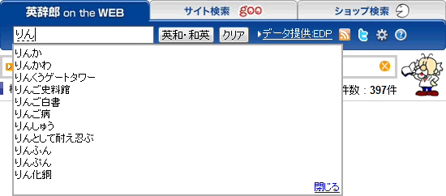

【Tip】キーワード入力補助でラクラク検索♪
■
『英辞郎 on the WEB』の「キーワード入力補助」という検索を補助する機能があります。
キーワード入力補助とは、
- 入力した文字列で始まる項目見出しを先読みできる
- 表示された項目見出し候補から選択して検索できるので、スペルミスによるエラーが減る
- 少ない文字入力で、検索したい項目が見つかる
……といったメリットのあるユーザインターフェイスです。
キーワード入力補助を有効にすると、検索キーワード入力欄に 1 文字ずつ入力するたびに、その文字列で始まる項目見出しが絞り込まれながら表示されていきます。
⇒キーワード入力補助は、「ユーザ設定」にて有効・無効の設定ができます。詳しくはこちら
※設定が保存されない場合は、ブラウザのキャッシュをクリアしてから、再度設定してください。
 左の図は、検索キーワード入力欄に apple と入力したときの結果です。
左の図は、検索キーワード入力欄に apple と入力したときの結果です。
apple を先頭に、Apple、apple allergy、apple blight、apple blossom ……と、検索キーワードのapple で始まる（前方一致する）項目見出しを『英辞郎 on the WEB』の英和データから逐次検索し、検索キーワード入力欄の下に表示します。ここには、最大で 20 件の項目見出しを表示します。
表示された項目見出しにマウスでカーソルをあわせる（マウスオーバー）と、カーソルの下の項目見出しが水色のハイライトで強調表示されます（画像）。マウスを動かすと、ハイライト部分もそれに応じて移動します。検索したい項目がみつかったら、その項目見出しをクリックすると、その項目見出しで検索を実行します。
また、表示された項目見出し一覧から、どれかひとつを選んで検索するのに、上下の矢印キー（↑・↓）も利用できます（画像）。このとき選択された項目見出しは、青くハイライトされ、項目見出しは白文字で表示されます。このときに、Enter キー（Macintosh は return キー）を押すと、その項目見出しで検索を実行します。
項目見出しのリストの一番下に表示される「閉じる」リンクをクリックすると、リストを閉じることができます。
リストの下に隠れてしまった検索結果を見たいときに便利です。
閉じたリストは、検索キーワード入力欄に文字を入力すると再び表示されます。
● また、キーワード入力補助は、英語の検索キーワードだけでなく、日本語の検索キーワードでも有効です。
右の図をご参照いただければわかるとおり、検索キーワードが未確定のひらがなの状態（りん）のときにも「りん」で始まる項目見出しをリストアップします。また、このキーワードが、「リン」や「林」に変換されたときにも、逐次「リン」（画像）で始まる項目見出し、「林」（画像）で始まる項目見出しをリストアップします。もちろん、カナ漢字変換確定後にも、検索キーワード入力欄に入力されたキーワードに前方一致する項目見出し一覧を表示します。
候補一覧からの検索方法は、日本語の検索キーワードの場合でも、前述の英語の検索キーワードの場合と同じです。
※現時点では、『SPACE ALC』のトップページ（http://www.alc.co.jp/）にある『英辞郎 on the WEB』のキーワード入力欄については、キーワード入力補助機能は対応していません。予めご了承ください。（2009年７月現在）
{kind=link}
{kind=link}
{kind=link}
{kind=link}